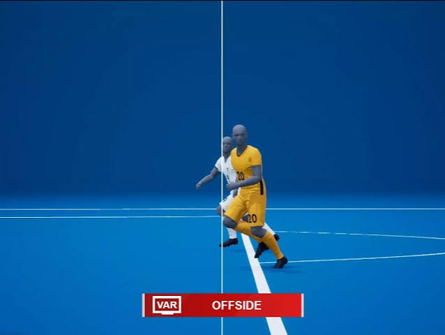

¿Alguna vez te preguntaste cómo hacen los árbitros para saber si una pelota cruzó la línea de gol por un milímetro, o si hubo un fuera de juego invisible al ojo humano? En el fútbol actual, las decisiones ya no dependen solo de la intuición de las personas. Hoy, el corazón del juego es tecnológico: las pelotas oficiales de los torneos más importantes llevan un sensor inteligente en su interior que revoluciona el arbitraje y la ciencia del deporte.

Conocer cómo funciona esta tecnología nos permite descubrir que una simple pelota es, en realidad, un complejo dispositivo científico. A continuación, abrimos el balón para explorar la física, la electrónica y la matemática que se esconden detrás de cada pase.

Tecnología invisible: el sensor CTR-CORE
En el centro geométrico de la pelota se suspende un pequeño chip mediante un sistema de tensores elásticos para que el peso no afecte su trayectoria. Este dispositivo contiene una Unidad de Medición Inercial (IMU) que envía datos de posición y movimiento a una velocidad asombrosa de 500 veces por segundo. Funciona con una pequeña batería recargable por inducción (sin cables) y transmite ondas de radiofrecuencia hacia las antenas instaladas alrededor de la cancha para rastrear el balón en tiempo real.
La física de los datos y el fuera de juego
Este chip trabaja en equipo con cámaras de alta velocidad distribuidas en el estadio. Cuando un jugador patea, el sensor detecta el impacto exacto (el milisegundo exacto del “contacto”). Al cruzar estos datos con los algoritmos informáticos, el sistema del VAR puede determinar si había una posición adelantada en el momento preciso del pase. Además, el chip mide la velocidad del disparo, la aceleración y las revoluciones por minuto del giro de la pelota, aplicando principios de cinemática y dinámica física.
Impacto en la salud y el rendimiento
Más allá de cobrar un gol, los datos del sensor se usan para la salud de los atletas. Al medir la fuerza de los impactos, los cuerpos médicos analizan el desgaste muscular y la potencia acumulada de los jugadores. Esto ayuda a diseñar entrenamientos personalizados, regular las cargas de esfuerzo físico para prevenir lesiones graves y planificar una nutrición celular adecuada para la recuperación del plantel.
Conclusión
La tecnología en la pelota nos demuestra que la ciencia no se queda encerrada en un laboratorio con tubos de ensayo, sino que rueda con nosotros en el patio y en la cancha. Analizar estas innovaciones en nuestra escuela nos invita a pensar cómo las herramientas digitales transforman nuestras actividades cotidianas, transformando la pasión del juego en una oportunidad para aprender y explorar el mundo técnico que nos rodea.